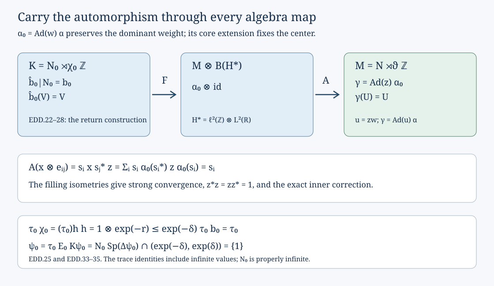

Equivariant discrete decomposition
A module-trivial automorphism of a type \(\mathrm{III}_0\) factor can be put into a discrete crossed-product presentation in which it fixes the implementing unitary and preserves the coefficient trace. We construct that presentation, retaining the automorphism through the continuous core, the return algebra and the final absorption of a type I tensor factor.
The normal form and its inputs
Let \(M\ne0\) be a factor with separable predual of type \(\mathrm{III}_0\), and let \(\alpha\in\operatorname{Aut}(M)\). Its module is the restriction of its canonical extension to the center of the continuous core. Suppose
\[ \operatorname{mod}(\alpha)=\mathrm{id}. \tag{EDD.1} \]There are a unitary \(u\in M\), a faithful normal semifinite weight \(\psi\), a properly infinite semifinite algebra \(N\subset M\), an automorphism \(\vartheta\) of \(N\), and a unitary \(U\in M\), such that
\[ \begin{gathered} M=N\rtimes_\vartheta\mathbb Z,\qquad UxU^*=\vartheta(x),\qquad M_\psi=N,\\ \gamma=\operatorname{Ad}(u)\alpha,\qquad \gamma(N)=N,\qquad \gamma|_{Z(N)}=\mathrm{id},\\ \tau=\psi|_N,\qquad \tau\gamma|_N=\tau,\qquad \gamma(U)=U. \end{gathered} \tag{EDD.2} \]The weight is lacunary: \(1\) is isolated in the full spectrum of its modular operator. Its centralizer is properly infinite, which is the meaning of infinite multiplicity here. In fact \(\psi\gamma=\psi\), and \(\gamma|_N\) commutes with \(\vartheta\). No approximate finite-dimensionality hypothesis is imposed.
We use the earlier dominant-weight existence and comparison, DS5 and DS7, canonical extension, MCC01, the normalized core trace, LP01, and modular transport, KM06. The geometric inputs are the full return-system construction, SR2–7 and return-trace construction, ZDC1–4. These include the nonsingular suspension theorem, normal onto crossed-product maps and their normal inverses. We will check their equivariance for the extra automorphism explicitly.
We also use normal double duality, ND, properly infinite absorption and the type of the core, CDEC1–3, and the dual weight of a contracting integer action, LAC5. The last input proves the full modular spectral gap and identifies the whole centralizer, not just its finite-weight elements.
All tensor products and isomorphisms below are spatial and normal. Weight identities hold on the entire positive cone, including infinite values.
First preserve a dominant weight
A faithful normal semifinite weight is dominant in the sense used here if its centralizer is properly infinite and every positive scalar multiple is inner equivalent to it. Since \(M\) is properly infinite and has separable predual, DS7 constructs such a weight \(\varphi\).
The weight \(\varphi\alpha^{-1}\) is also dominant. Modular transport identifies its centralizer with \(\alpha(M_\varphi)\), so it is properly infinite. If \(\varphi\operatorname{Ad}(z)=c\varphi\), then
\[ (\varphi\alpha^{-1})\operatorname{Ad}(\alpha(z)) =c\,\varphi\alpha^{-1}. \tag{EDD.3} \]DS5 therefore supplies a unitary \(w\in M\) such that
\[ \varphi\operatorname{Ad}(w)=\varphi\alpha^{-1}. \]Put \(\alpha_0=\operatorname{Ad}(w)\alpha\). Then
\[ \varphi\alpha_0=\varphi,\qquad \alpha_0\sigma_t^\varphi=\sigma_t^\varphi\alpha_0. \tag{EDD.4} \]The second equality is KM06. This argument uses dominant-weight comparison for arbitrary properly infinite algebras in its separable-predual scope; it requires no classification of automorphisms of the type \(\mathrm{III}_1\) factor.
MCC01 proves that the canonical extension of an inner automorphism is inner, implemented by the same unitary in the core. It fixes the core center. Its composition law therefore gives
\[ \operatorname{mod}(\alpha_0)=\operatorname{mod}(\alpha)=\mathrm{id}. \tag{EDD.5} \]A trace-preserving automorphism of the core
Form
\[ P=M\rtimes_{\sigma^\varphi}\mathbb R,\qquad \theta_s(\pi(x))=\pi(x),\qquad \theta_s(\lambda_t)=e^{-ist}\lambda_t. \tag{EDD.6} \]Because \(\varphi\alpha_0^{-1}=\varphi\), the normalized cocycle in MCC01 is one. The canonical extension \(b\) is consequently
\[ b(\pi(x))=\pi(\alpha_0(x)),\qquad b(\lambda_t)=\lambda_t. \tag{EDD.7} \]The regular normalizer in MCC01 is the constant canonical standard unitary of \(\alpha_0\). Thus these formulas give an onto normal automorphism, not merely a representation of the algebraic crossed product. It commutes with \(\theta\) and fixes \(Z(P)\) pointwise by (EDD.5).
We check the trace as well. In LP01 let
\[ E(X)=\int_{\mathbb R}\theta_s(X)\,ds,\qquad \Phi=\varphi E,\qquad d^{it}=\lambda_t,\qquad \tau_P=\Phi_{d^{-1}}. \tag{EDD.8} \]Here \(E\) has extended positive values; identifying its target with \(M\) is understood. Commutation with \(\theta\) gives \(Eb=\alpha_0E\) on that cone, by positive integration. Hence \(\Phi b=\Phi\). Since \(b\) fixes every \(\lambda_t\), it fixes the spectral projections of \(d\). Apply \(b\) to the bounded spectral sandwiches defining \(\Phi_{d^{-1}}\), and take their scalar suprema. This proves
\[ \tau_P b=\tau_P,\qquad \tau_P\theta_s=e^{-s}\tau_P. \tag{EDD.9} \]LP01 uses \(ds\); a normalization using \(ds/(2\pi)\) rescales both traces by the same constant and changes none of these identities.
CDEC3 proves that \(P\) is type \(\mathrm{II}_\infty\) in the unrestricted algebraic sense. ZDC2 proves that its center flow is properly ergodic. The normal double-duality map
\[ \mathcal D:P\rtimes_\theta\mathbb R \longrightarrow M\bar\otimes B(L^2\mathbb R) \tag{EDD.10} \]is equivariant for the extension of \(b\) fixing the second real implementers and for \(\alpha_0\otimes\mathrm{id}\). Indeed ND sends the three generating families to
\[ x\longmapsto [t\mapsto\sigma_{-t}^\varphi(x)], \qquad \lambda_r\longmapsto1\otimes L_r, \qquad \ell_s\longmapsto1\otimes Q_s, \tag{EDD.11} \]where \(L_r\xi(t)=\xi(t-r)\) and \(Q_s\xi(t)=e^{-ist}\xi(t)\). The automorphism \(\alpha_0\) commutes with every \(\sigma_t^\varphi\), so its tensor extension has exactly the required effect on the orbit field and fixes both scalar families. Those families generate the whole tensor algebra by ND. Agreement of normal maps on them proves equivariance on the full algebra.
Lift the center without moving the automorphism
Choose the nonsingular suspension model of SR2 for the center flow. Write its base as \((\Omega,\mu,T)\), its finite positive roof as \(r\ge\delta>0\), its suspension flow as \(S_t\), and its signed integer hitting cocycle as \(n(t,y)\). The real coordinate on the lifted cover is specified by
\[ \Phi_{\rm cov}(s,\omega)=(n(s,\omega),S_s\omega),\qquad \Phi_{\rm cov}(s-r(\omega),T\omega)=L\Phi_{\rm cov}(s,\omega), \tag{EDD.12} \]where \(L(m,y)=(m-1,y)\). The cover map is a measure-class Borel isomorphism with the product measure class, for both time directions.
Set \(Q=\ell^\infty(\mathbb Z)\bar\otimes P\). SR constructs a continuous lifted action \(\widetilde\theta\) and a commuting deck automorphism
\[ (\chi q)_m=q_{m+1}. \tag{EDD.13} \]The lifted action applies \(\theta_t\) and permutes the integer coordinates on the central projections where the hitting number has a specified value.
Define \(b_Q=\mathrm{id}\otimes b\). It fixes \(Z(Q)\) pointwise. It commutes with \(\chi\). It also commutes with \(\widetilde\theta_t\): it fixes every central hitting projection, commutes with \(\theta_t\) on coefficients, and preserves the nonnegative or strong sums defining the lifted maps. This proves a global operator identity for each \(t\), without choosing values of a fiber map at a variable roof time.
The global trace
\[ \mathcal T(q)=\sum_{m\in\mathbb Z}\tau_P(q_m),\qquad q\in Q_+, \tag{EDD.14} \]is faithful normal semifinite. Finite coordinate cuts and finite-trace projections give its semifinite domain. Nonnegative reindexing on the central hitting projections gives
\[ \mathcal T\widetilde\theta_t=e^{-t}\mathcal T,\qquad \mathcal T\chi=\mathcal T,\qquad \mathcal T b_Q=\mathcal T. \tag{EDD.15} \]The last equality follows directly from (EDD.9). No conditional measure on a null cross section has entered these formulas.
The extra automorphism is constant in the height coordinate
SR3 gives a normal isomorphism with normal inverse
\[ \Psi:(Q,\widetilde\theta)\longrightarrow (L^\infty(\mathbb R)\bar\otimes D,\operatorname{lt}\otimes\mathrm{id}), \qquad \operatorname{lt}_tf(s)=f(s-t), \tag{EDD.16} \]preserving the specified real coordinate and the full center. Here \(Z(D)=L^\infty(\Omega)\). Coarse-type transfer in SR7 makes \(D\) semifinite of type II, and its predual is separable.
Let \(B=\Psi b_Q\Psi^{-1}\). It fixes the scalar real-coordinate algebra and commutes with translation. The fixed algebra of translation on the full tensor product is \(1\otimes D\): every normal coefficient slice is a scalar translation-invariant function, hence constant almost everywhere, and a normal probability slice in the real variable recovers its constant value. This is the scalar Fubini argument in SR3. Apply it also to \(B^{-1}\). We obtain \(a\in\operatorname{Aut}(D)\), and
\[ B=\mathrm{id}\otimes a,\qquad a|_{Z(D)}=\mathrm{id}. \tag{EDD.17} \]Equality follows on the scalar real multipliers and on constant \(D\)-fields, which generate the tensor product. Thus no jointly selected family of extra fiber automorphisms is needed.
Put \(\Gamma=\Psi\chi\Psi^{-1}\). Its restriction to the translation-fixed algebra is an automorphism \(\beta\) of \(D\), inducing \(f\mapsto f\circ T^{-1}\) on its center. Since \(B\Gamma=\Gamma B\),
\[ a\beta=\beta a. \tag{EDD.18} \]The full field formula supplied by SR is
\[ (\Gamma X)(s-r(\omega),T\omega)=\beta_\omega(X(s,\omega)). \tag{EDD.19} \]ZDC3 splits the transported global trace on its entire positive cone:
\[ \mathcal T\Psi^{-1}=(e^{-s}\,ds)\bar\otimes k, \tag{EDD.20} \]for a faithful normal semifinite trace \(k\) on \(D\). Its construction uses the central trace density and a Fubini-regular height; it never evaluates an arbitrary measurable representative at height zero. Choose a bounded compactly supported \(f\ge0\) with \(\int e^{-s}f(s)\,ds=1\). Testing the invariance in (EDD.15) on \(f\otimes x\), for every \(x\in D_+\), proves
\[ ka=k. \tag{EDD.21} \]This includes \(k(x)=\infty\), since the scalar factor is exactly one.
The return algebra and its whole contracting trace
Let
\[ N_0=Q\rtimes_{\widetilde\theta}\mathbb R. \]Extend \(\chi\) and \(b_Q\) by fixing the real implementing unitaries; call these extensions \(\chi_0\) and \(b_0\). The regular construction makes them normal automorphisms, and they commute. Under SR5's normal translation-crossing identification,
\[ N_0=B(L^2\mathbb R)\bar\otimes D,\qquad b_0=\mathrm{id}\otimes a. \tag{EDD.22} \]For the second equality, both maps agree on constant \(D\)-fields, scalar multipliers and real translations. These generate the whole displayed algebra.
Write \(A=r\circ T^{-1}\) and
\[ v(\eta)=L_{-A(\eta)} \in B(L^2\mathbb R)\bar\otimes Z(D). \]This is a measurable unitary field. ZDC4 gives
\[ \chi_0=\operatorname{Ad}(v)(\mathrm{id}\otimes\beta). \tag{EDD.23} \]The minus sign and inverse-base argument follow directly from (EDD.19): conjugation sends \(f(s)\) to \(f(s+A(\eta))\). Since \(a\) fixes \(Z(D)\), \(b_0(v)=v\); (EDD.18) also verifies commutation in this model.
For clarity, the return-trace calculation is global. Apply (EDD.19) to \(f\otimes e^{-r}x\). Its value at \((s,\eta)\) is
\[ f(s+A(\eta))e^{-A(\eta)}(\beta x)(\eta). \]The identity \(\int e^{-s}f(s+A)\,ds=e^A\), interpreted through central spectral cuts and nonnegative integration, cancels the two factors. Invariance of \(\mathcal T\) under \(\Gamma\) proves
\[ k\beta(x)=k(e^{-r}x)\le e^{-\delta}k(x). \tag{EDD.24} \]This is an equality of full traces; any Jacobian of the chosen base measure is already incorporated in \(k\). Disintegrating it does not authorize dropping that Jacobian from a fiberwise formula.
Give \(N_0\) the trace \(\tau_0=\operatorname{Tr}\otimes k\). Its positive matrix-diagonal construction and inner invariance give
\[ \tau_0 b_0=\tau_0,\qquad \tau_0\chi_0=(\tau_0)_h,\qquad h=1\otimes e^{-r},\qquad 0<h\le e^{-\delta}1. \tag{EDD.25} \]The usual matrix trace has value one on a rank-one projection. Finite matrix compressions prove these formulas for every positive element by normality. The algebra \(N_0\) is properly infinite: the first tensor factor supplies two isometries with initial projection one and orthogonal ranges. Its center is \(1\otimes Z(D)\), so \(b_0\) fixes it pointwise.
Equivariance through the two crossings
Form \(K=N_0\rtimes_{\chi_0}\mathbb Z\), with implementing unitary \(V\). Let \(\widehat b_0\) be the extension of \(b_0\) fixing \(V\). SR5 constructs an isomorphism
\[ \mathcal J:K\longrightarrow B(\ell^2\mathbb Z)\bar\otimes(P\rtimes_\theta\mathbb R). \tag{EDD.26} \]We verify exactly which automorphism it transports.
First exchange the commuting integer and real crossings. The double regular representations have coefficients \(\widetilde\theta_{-t}\chi_{-j}(q)\), and their coordinate-flip unitary fixes the indicated coefficients and both implementing groups. Applying \(b_Q\) to those coefficients commutes with this map.
Next the integer translation crossing of \(\ell^\infty(\mathbb Z)\bar\otimes P\) is \(B(\ell^2\mathbb Z)\bar\otimes P\). SR21–23 give its complete matrix units \(e_iD_{j-i}\). The map \(b_Q\) fixes these units and acts by \(b\) on their \(P\)-coefficients. It therefore becomes \(\mathrm{id}\otimes b\).
In this representation the real action is
\[ \operatorname{Ad}(C_t)(\mathrm{id}\otimes\theta_t),\qquad C_t(y)=S_{n(t,S_{-t}y)} \in B(\ell^2\mathbb Z)\bar\otimes Z(P). \tag{EDD.27} \]The shifts satisfy \(S_j\delta_m=\delta_{m+j}\). SR proves the cocycle law and strong continuity of \(C_t\). Its regular cocycle transport fixes coefficients and sends the real implementer to \(C_t\) times the implementer for \(\mathrm{id}\otimes\theta\). Since \(b\) fixes \(Z(P)\), it fixes every \(C_t\). This transport is consequently equivariant as well. Each map is the specified normal onto map with its normal inverse from SR; their composition proves that (EDD.26) carries \(\widehat b_0\) to \(\mathrm{id}\otimes\widehat b\), where \(\widehat b\) fixes the second real implementers.
Finally compose with (EDD.10), and flip tensor factors. There is a normal isomorphism with normal inverse
\[ F:K\longrightarrow M\bar\otimes B(H_*),\qquad F\widehat b_0=(\alpha_0\otimes\mathrm{id})F, \quad H_*=\ell^2(\mathbb Z)\otimes L^2(\mathbb R). \tag{EDD.28} \]In particular the stable isomorphism is equivariant for the specified automorphisms, before any tensor factor is absorbed.
Absorption gives an explicit inner perturbation
Choose a countable orthonormal basis of \(H_*\). Proper infiniteness and separability give a filling family of isometries \(s_i\in M\):
\[ s_i^*s_j=\delta_{ij}1,\qquad \sum_i s_is_i^*=1 \quad\text{strongly}. \]CDEC1 constructs the normal isomorphism
\[ \mathcal A:M\bar\otimes B(H_*)\longrightarrow M,\qquad \mathcal A(x\otimes e_{ij})=s_i x s_j^*, \tag{EDD.29} \]with inverse \(y\mapsto(s_i^*ys_j)_{ij}\). These are full bounded operator matrices, not a claim of norm convergence of arbitrary matrix sums.
Define
\[ z=\sum_i s_i\alpha_0(s_i^*). \tag{EDD.30} \]The initial projections of the summands are the mutually orthogonal \(\alpha_0(s_is_i^*)\), and their final projections are \(s_is_i^*\). Orthogonal square-sum tails prove strong convergence of the series and its adjoint. Their sums fill one, so \(z^*z=zz^*=1\). Furthermore
\[ z\alpha_0(s_i)=s_i,\qquad \operatorname{Ad}(z)\alpha_0(s_i x s_j^*) =s_i\alpha_0(x)s_j^*. \tag{EDD.31} \]Agreement on all matrix entries, followed by normality, gives
\[ \mathcal A(\alpha_0\otimes\mathrm{id})\mathcal A^{-1} =\operatorname{Ad}(z)\alpha_0 =\operatorname{Ad}(zw)\alpha. \tag{EDD.32} \]Thus take \(u=zw\), \(\mathcal I=\mathcal A F\), \(N=\mathcal I(N_0)\), \(U=\mathcal I(V)\), and transport \(\chi_0,\tau_0,b_0\) to \(N\). Equations (EDD.25)–(EDD.32) prove all the algebraic and trace assertions in (EDD.2). The family \(s_i\) need not be fixed by \(\alpha_0\); the unitary \(z\) accounts for its motion exactly.

The diagram records the full automorphisms on both stable algebras. Its final arrow is (EDD.29), and the correction attached to it is precisely (EDD.30). The return trace contracts by the central density in (EDD.25).
The dual weight and its actual modular gap
On \(K=N_0\rtimes_{\chi_0}\mathbb Z\), let \(E_0\) be the normal faithful coefficient expectation and put \(\psi_0=\tau_0E_0\). LAC5 proves that this is faithful normal semifinite and that
\[ \sigma_t^{\psi_0}(x)=x\ (x\in N_0),\qquad \sigma_t^{\psi_0}(V)=Vh^{it}. \tag{EDD.33} \]Here the density belongs on the right. For \(n>0\) and \(m>0\), its iterates are
\[ h_n=\prod_{j=0}^{n-1}\chi_0^{-j}(h),\qquad h_{-m}=\prod_{j=1}^{m}\chi_0^{j}(h^{-1}),\qquad h_0=1. \tag{EDD.34} \]All factors are central affiliated operators. With \(\lambda=e^{-\delta}<1\), they satisfy \(h_n\le\lambda^n\) and \(h_{-m}\ge\lambda^{-m}\).
The complete GNS space is \(\bigoplus_{n\in\mathbb Z}V^nL^2(N_0,\tau_0)\). On its \(n\)-th summand the modular operator is multiplication by \(h_n\). LAC5 proves this on the full finite ideal and identifies the direct-sum operator domain. Its uniform resolvent estimate yields
\[ \operatorname{Sp}(\Delta_{\psi_0})\cap(\lambda,\lambda^{-1})=\{1\}. \tag{EDD.35} \]For example, a real point in this interval different from one has distance at least \(\min\{a-\lambda,\lambda^{-1}-a,|1-a|\}>0\) from all the summand spectra. The resolvents therefore form a bounded direct sum with range in the full operator domain.
The whole fixed algebra is \(N_0\). Invariance forces every nonzero Fourier coefficient to annihilate the spectral characters of the corresponding density away from one; (EDD.34) puts all its spectrum strictly on one side of one. Those coefficients vanish. The regular matrix-entry reconstruction in LAC5 then gives \(X=E_0(X)\). Conversely (EDD.33) fixes \(N_0\). Since \(N_0\) is properly infinite, \(\psi_0\) has infinite multiplicity.
The expectation satisfies \(E_0\widehat b_0=b_0E_0\). One may check this by compression to the zero coordinate in the regular representation, or by the circle average defining \(E_0\); the normal extension fixes \(V\) and commutes with that circle action. Equation (EDD.25) consequently gives \(\psi_0\widehat b_0=\psi_0\).
Finally set \(\psi=\psi_0\mathcal I^{-1}\). Normal transport preserves its weight properties, identifies its centralizer with \(N\), and identifies its modular operator through the GNS unitary. Thus (EDD.35) proves lacunarity for the actual transported weight. All assertions of (EDD.2) follow. In particular, applying \(\gamma\) to \(UxU^*=\vartheta(x)\) and using \(\gamma(U)=U\) proves \(\gamma|_N\vartheta=\vartheta\gamma|_N\).
Exercises with solutions
1. Fix the order of the first inner perturbation. Suppose \(\varphi\operatorname{Ad}(w)=\varphi\alpha^{-1}\). Which perturbation preserves \(\varphi\)?
Solution. Composition on the right by \(\alpha\) gives \(\varphi\operatorname{Ad}(w)\alpha=\varphi\). Thus it is \(\operatorname{Ad}(w)\alpha\). Reversing the order does not follow from the displayed weight identity.
2. Can the absorbed automorphism equal the original one automatically?
Solution. Formula (EDD.31) shows the exact discrepancy. Equality holds if and only if \(\operatorname{Ad}(z)\alpha_0=\alpha_0\), equivalently \(z\in Z(M)\). For a factor this means \(z\) is scalar. Choosing a filling family does not generally ensure that condition; (EDD.30) always supplies the required unitary correction.
3. Recover a coefficient trace without evaluating at zero. If \(\mathcal T'=(e^{-s}ds)\otimes k\) and \(\mathcal T'(\mathrm{id}\otimes a)=\mathcal T'\), prove \(ka=k\).
Solution. Let \(f=(1-e^{-1})^{-1}1_{[0,1]}\). Its weighted integral is one. For every positive \(x\), the equality at \(f\otimes x\) is exactly \(k(a(x))=k(x)\), including infinite values. It is an equality in the algebra of measurable classes and uses no value at a prescribed height.
4. Check the second negative Fourier degree.
Solution. Taking adjoints in (EDD.33) gives \(\sigma_t(V^{-1})=V^{-1}\chi_0(h^{-1})^{it}\). Multiplying twice and moving the first density across \(V^{-1}\) gives
\[ \sigma_t(V^{-2}) =V^{-2}\bigl(\chi_0(h^{-1})\chi_0^2(h^{-1})\bigr)^{it}. \]The density is at least \(\lambda^{-2}\). Omitting the inverse iterates would place the negative degree on the wrong side of the spectral gap.
5. Identify where triviality of the module is used.
Solution. It makes \(b\) fix \(Z(P)\). Hence \(b_Q\) fixes the hitting projections and the specified real coordinate; the product automorphism becomes \(\mathrm{id}\otimes a\) with \(a|_{Z(D)}=\mathrm{id}\). It also fixes the central shift cocycle \(C_t\) in (EDD.27) and the deck unitary \(v\) in (EDD.23). These facts prove equivariance and trace preservation for the precise return presentation. Commutation with the dual real action alone would not supply them.
The source statement is M. Takesaki, Theory of Operator Algebras III (2003), XVIII.2, Lemma 2.9, printed p.327. The proof here gives original exposition through the explicit programme constructions named above. New exposition and the SVG diagram: CC0-1.0, authored by OpenAI Codex (AI).